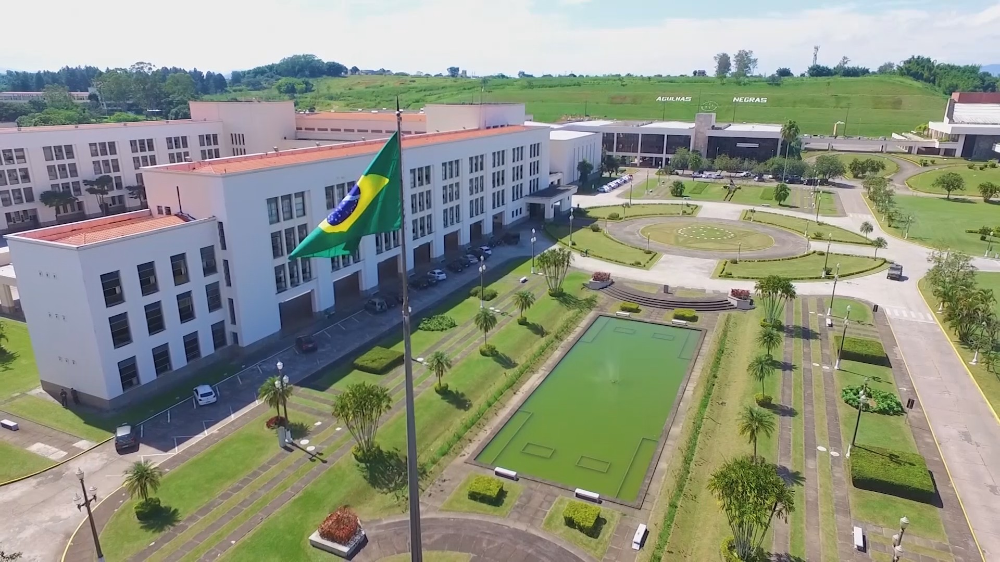

AMAN
A Academia Militar das Agulhas Negras (AMAN) forma os oficiais combatentes do Exército. Ela ocupa uma área de 67 km ² estendendo-se da Rodovia Presidente Dutra até as encostas da Serra da Mantiqueira e do Maciço do Itatiaia. Aberta à visitação, a AMAN dispõe de um dos maiores e mais completos parques esportivos do estado do Rio de Janeiro, além de um moderno teatro com capacidade para 2.821 pessoas.A Cidade Acadêmica, como também é conhecida a área em que a Academia está instalada, abriga uma população aproximada de 12.000 habitantes e dispõe de um belo complexo arquitetônico e paisagístico.
